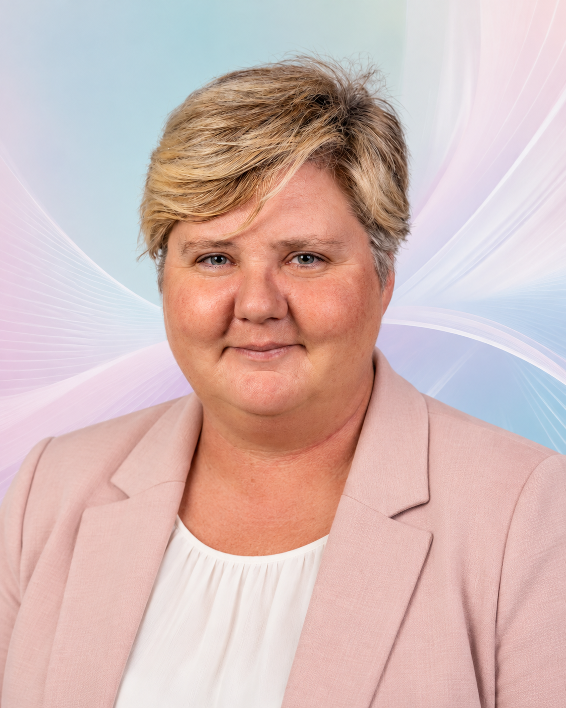

The person behind the processes
Hi, I'm Marji.
I'm a technical operations professional, problem-solver, and lifelong learner who believes that the best solutions begin with understanding people.
My experience spans technology, business operations, logistics, and education. What connects these worlds is my ability to see how individual pieces fit into a larger system—and find ways to make that system work better.
My Journey
Learning to Build and Manage
My experience in business operations began long before my career in technology. From co-owning a paintball business to operating an independent childcare service, I learned firsthand what it takes to turn an idea into a functioning operation. Scheduling, financial tracking, customer relationships, safety procedures, and the countless details behind everyday decisions gave me an early appreciation for well-organized systems.
Where Everything Connected
Trucking and logistics brought those lessons together on a much larger scale. Beginning as a commercial driver, I became deeply involved in coordinating loads, planning routes, managing schedules and hours-of-service requirements, communicating with shippers and receivers, and reconciling expenses and driver pay.
The work required balancing multiple moving parts, often with incomplete information and constantly changing circumstances. I learned to anticipate problems, track the details that mattered, and develop practical ways to keep everything organized.
Those experiences also revealed how much time and information could be lost when records were scattered across notebooks, paperwork, and disconnected systems. That frustration eventually inspired my interest in building better tools for drivers, including the concepts behind TruckerPay and Waypoint.
A New Way to Solve Familiar Problems
My transition into IT built on skills I had already been using for years. Through software development training and technical education, I began learning how the systems behind everyday operations are designed, supported, tested, and improved.
At Infosys, my experience expanded from ServiceNow training and functional testing into Level 2 technical service operations for a global financial services firm, and later network operations for a major telecommunications provider.
Along the way, I found myself gravitating toward more than resolving individual tickets. I enjoyed understanding why processes worked the way they did, identifying gaps, creating documentation, and helping colleagues develop the knowledge they needed to work independently.
Bringing the Pieces Together
Today, I bring business operations experience, technical knowledge, documentation, training, and systems thinking into the same conversation. I enjoy working at the intersection of people, processes, and technology, where understanding the bigger picture can lead to better solutions.
My career hasn't followed a traditional path, but every chapter has contributed to the way I approach problems today.
How I Think & Work
I naturally gravitate toward understanding how things work—and why they sometimes don't.
I enjoy breaking complicated problems into manageable pieces, identifying gaps in processes, and creating practical solutions that other people can understand and use.
Technical Operations
I support complex technical environments by troubleshooting issues, coordinating escalations, and keeping service workflows moving. My experience spans network operations for a major telecommunications provider and Level 2 service operations for a global financial services firm.
Process Improvement
I look for the friction points that slow people down. Whether I'm analyzing service workflows, identifying recurring issues, or developing practical improvements, my goal is to make processes clearer, more consistent, and easier to follow.
Documentation
I've developed process guides, troubleshooting references, and technical runbooks that help teams work more independently. At a major telecommunications client, a documentation specialist requested permission to incorporate my runbooks into the client's official procedures.
Knowledge Sharing
I enjoy helping people build confidence with unfamiliar systems and processes. I've supported onboarding, trained colleagues, mentored newer team members, and created reference materials that make complicated information easier to understand.
Beyond the Job Title
My professional and personal lives have always influenced one another. Many of the skills I use in my career have grown through experiences, interests, and projects outside the workplace.
Family, Learning & Creative Problem-Solving
Being a mother has influenced how I approach learning, communication, and problem-solving. I've learned that effective systems need to accommodate real people, with different strengths, challenges, and ways of understanding the world.
That perspective inspired Hero Academy, a structured summer learning program I developed for my children. What began as a way to make learning more engaging grew into a collection of personalized educational materials, independent activities, progress tracking, and creative challenges.
The experience reinforced something I believe professionally: the best-designed processes aren't necessarily the most complicated. They're the ones people can understand, use, and adapt to their needs.
Writing, Research & Connecting Generations
My interest in family history has become an extensive research and writing project. I'm developing a family history book that brings together genealogical records, historical context, family connections, and stories spanning generations.
The work involves following evidence, evaluating conflicting information, organizing research, and translating complicated historical details into an understandable narrative.
Although genealogy and technical operations might seem worlds apart, they share something I enjoy: finding connections, questioning assumptions, and building a reliable picture from scattered information.
Building Tools From Real Experience
Some of my strongest ideas come from problems I've experienced personally. During my years in trucking, I saw how difficult it could be to organize load information, customer details, settlement records, and all the little things drivers need to remember from one trip to another.
Those experiences inspired TruckerPay and eventually Waypoint, a broader concept focused on making the operational side of trucking easier to manage.
These projects allow me to bring together my experience in logistics, business operations, software development, and workflow design while exploring how technology can solve everyday problems.
Curiosity. Connection. Purpose.
I believe technology works best when it makes people's lives easier. That's the perspective I bring to my work and to everything I build.
Explore My Projects